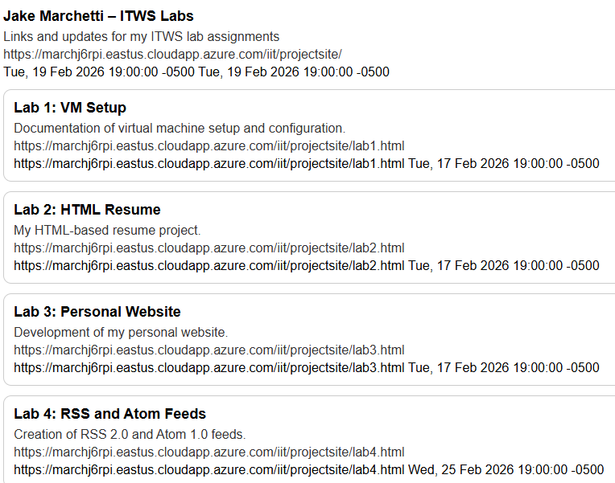
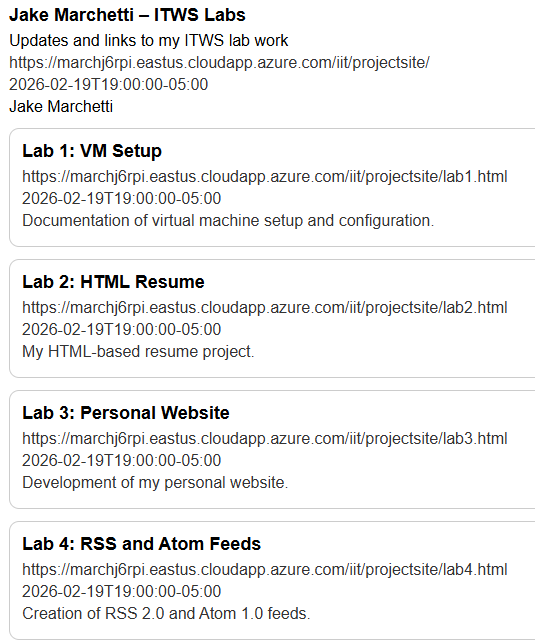
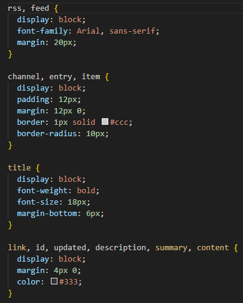

This RSS 2.0 feed contains at least four items linking to my lab pages and includes the required channel and item elements (title, link, description).

This RSS 2.0 feed contains at least four items linking to my lab pages and includes the required channel and item elements (title, link, description).

This Atom 1.0 feed contains at least four entries linking to my lab pages and includes required feed elements (title, id, updated, author) and per-entry metadata.

Both feeds include a stylesheet processing instruction linking to rss.css, which improves readability when the XML is viewed in a browser.
CSS File: rss.css